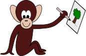

Le Piction’Agile est un serious game, qui a pour but d’illustrer des valeurs agiles : l’itérativité,
l'incrémental et la communication.
Souvent imité, jamais égalé !
Matériel
Il vous faudra pour jouer à ce serious game:
- Les différentes images imprimées
- Autant de feuille A4 que vous voudrez jouer de parties (1 feuille A4
pour jouer les 2 manches)
- 1 crayon de bois + 1 gomme pour chaque dessinateur
Règle basiques
Le but du jeu est de reproduire un des dessins qui sont fournis dans la boîte.
Organisation des équipes
Les équipes sont constituées d’un dessinateur et d’un spécifieur (pour un nombre impaire de joueur une
équipe peut avoir 2 dessinateurs).
L’équipe des spécifieurs va devoir décrire l’image à l’équipe des dessinateurs en 2 manches :
Première Manche
Lors de la première manche, le spécifieur va décrire le dessin en entier, et le dessinateur
va tenter de le reproduire. Le spécifieur a 2 minutes pour décrire l’image et le dessinateur a
le droit à 3 minutes supplémentaires pour peaufiner son dessin. Le dessinateur peut commencer son
dessin dès que le spécifieur commence à décrire l’image.
Attention : Le dessinateur ne peut ni poser de questions ni
parler.
Seconde Manche
Sans dévoiler le dessin entre les deux manches, le spécifieur décrit le même dessin de
manière itérative. Cette fois, le dessin doit être décrit par étapes (ou sprint), et à chaque fin
d’étape les spécifieurs
peuvent regarder le dessin qui a été fait, donner des indications pour le corriger s’il le faut, et
décrire l’étape suivante.
Attention : Les spécifieurs sont autorisés à regarder les dessins
UNIQUEMENT à la fin de chaque sprint
Les joueurs font autant d’étapes qu’ils veulent mais la durée totale du dessin ne doit pas dépasser 10
minutes
C'est le moment de communiquer !
Mode alternatif
Téléphone arabe
(3 joueurs minimum) : Un joueur va décrire l’image entière à un second joueur. Ce second joueur, qui ne
voit pas l’image, va tenter de re-décrire l’image au dessinateur.
Du contenu
Du contenu